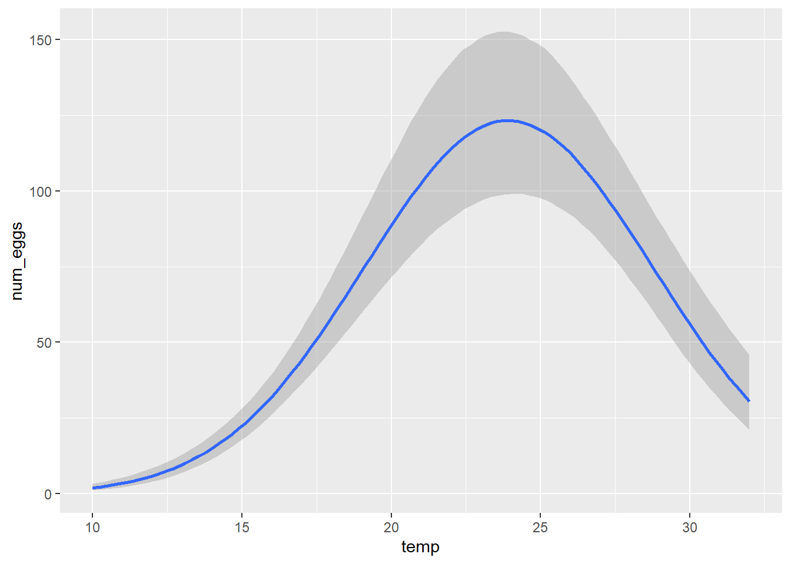
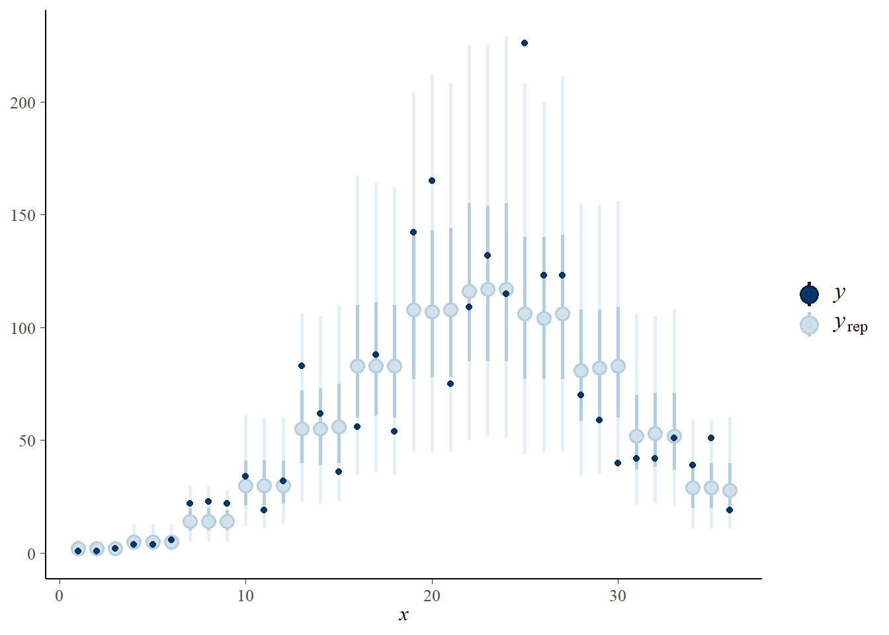

Already used for maximum likelihood exercises, the thermal_range.csv dataset represents the result of an experiment to determine the effect of temperature (temp) on the number of eggs (num_eggs) produced by a species of mosquito. Three replicates were measured for temperature values between 10 and 32 degrees Celsius.
library(brms)
therm <- read.csv("../donnees/thermal_range.csv")
head(therm)## temp num_eggs
## 1 10 1
## 2 10 1
## 3 10 2
## 4 12 4
## 5 12 4
## 6 12 6Let’s remember the model used previously for this dataset. The average number of eggs produced is given by a Gaussian curve:
\[N = N_o \exp \left( - \frac{(T - T_o)^2}{\sigma_T^2} \right)\]
In this equation, \(T_o\) is the optimum temperature, \(N_o\) is the number of eggs produced at this optimum and \(\sigma_T\) represents the tolerance around the optimum (the higher \(\sigma_T\) is, the slower \(N\) decreases around the optimum).
brm(bf(num_eggs ~ No * exp(-(temp-To)^2/sigmaT^2), No + To + sigmaT ~ 1, nl = TRUE),
data = therm)Note:
We need to enclose the formula in a bf function and specify the argument nl = TRUE (for non-linear).
After the non-linear formula of the model, we need to add a term describing the parameters. Here, No + To + sigmaT ~ 1 only means that we estimate a fixed effect for each parameter. If one of the parameters varied according to a group variable, we could write for example No ~ (1|group), To + sigmaT ~ 1.
Since we are going to use a negative binomial distribution with a logarithmic relationship to represent the mean of the response (family = negbinomial in brms), we need to modify the formula above to represent the logarithm of the mean number of eggs \(N\). Rewrite the bf function by applying this transformation.
Solution
\[\log N = \log N_o - \frac{(T - T_o)^2}{\sigma_T^2}\]
brm(bf(num_eggs ~ logNo - (temp-To)^2/sigmaT^2, logNo + To + sigmaT ~ 1, nl = TRUE),
data = therm, family = negbinomial)set_prior statement, the parameter name is specified with nlpar for a non-linear model. For example, set_prior("normal(0, 1)", nlpar = "To") assigns a standard normal distribution to the parameter To.Note: Don’t forget to specify the lower bound for sigmaT.
Also add a prior distribution for the \(\theta\) parameter of the negative binomial distribution with set_prior("gamma(2, 0.1)", class = "shape"). You can visualize this distribution in R with plot(density(rgamma(1E5, 2, 0.1)). Since the variance of the negative binomial distribution is \(\mu + \mu^2/\theta\), where \(\mu\) is the mean, we want to avoid values of \(\theta\) too close to zero. With the specified parameters, \(\theta\) is small for values close to 0 and greater than 50 (with a \(\theta\) so large, the negative binomial distribution almost matches that of Poisson).
Solution
Here is one possible prior choice:
prior_therm <- c(set_prior("normal(4, 2)", nlpar = "logNo"),
set_prior("normal(20, 10)", nlpar = "To"),
set_prior("normal(0, 5)", nlpar = "sigmaT", lb = 0),
set_prior("gamma(2, 1)", class = "shape"))The normal(4, 2) distribution for \(\log N_o\) gives ~95% probability to values of \(\log N_0\) between 0 and 8, so \(N_0\) between 1 and 3000 approximately.
The normal(20, 10) distribution for \(T_o\) gives ~95% probability to values between 0 and 40 degrees C.
The half-normal distribution (normal truncated at 0) for \(\sigma_T\) gives ~95% probability to values below 10.
Note that considering the temperature range tested in this experiment (between 10 and 32 degrees C), we could not detect an optimum beyond this range anyway, or a standard deviation that would be much greater than the difference between the extreme values tested.
brm, using the formula and prior distributions specified in the previous parts, with a negative binomial distribution of the response. Visualize the shape of the estimated \(N\) vs. \(T\) function with marginal_effects. Determine the mean value and the 95% credibility interval for the posterior distribution of each parameter.Solution
therm_fit <- brm(bf(num_eggs ~ logNo - (temp-To)^2/sigmaT^2,
logNo + To + sigmaT ~ 1, nl = TRUE),
data = therm, family = negbinomial, prior = prior_therm)marginal_effects(therm_fit)## Warning: Method 'marginal_effects' is deprecated. Please use
## 'conditional_effects' instead.
summary(therm_fit)## Family: negbinomial
## Links: mu = log; shape = identity
## Formula: num_eggs ~ logNo - (temp - To)^2/sigmaT^2
## logNo ~ 1
## To ~ 1
## sigmaT ~ 1
## Data: therm (Number of observations: 36)
## Samples: 4 chains, each with iter = 2000; warmup = 1000; thin = 1;
## total post-warmup samples = 4000
##
## Population-Level Effects:
## Estimate Est.Error l-95% CI u-95% CI Rhat Bulk_ESS Tail_ESS
## logNo_Intercept 4.82 0.11 4.60 5.03 1.00 2155 2233
## To_Intercept 23.95 0.36 23.33 24.74 1.00 2134 1616
## sigmaT_Intercept 6.87 0.35 6.27 7.64 1.00 1656 1916
##
## Family Specific Parameters:
## Estimate Est.Error l-95% CI u-95% CI Rhat Bulk_ESS Tail_ESS
## shape 6.11 1.54 3.57 9.54 1.00 3133 2699
##
## Samples were drawn using sampling(NUTS). For each parameter, Bulk_ESS
## and Tail_ESS are effective sample size measures, and Rhat is the potential
## scale reduction factor on split chains (at convergence, Rhat = 1).| Parameter | Estimate | Interval |
|---|---|---|
| \(N_o\) | 123.2 | (104.2, 147.2) |
| \(T_o\) | 23.9 | (23.4, 24.5) |
| \(sigma_T\) | 6.82 | (6.33, 7.42) |
| \(k\) | 0.103 | (0.059, 0.186) |
Note: The parameter \(k\) corresponds to \(1 / \theta\) for the negative binomial distribution.
Solution
The results for \(T_o\) and \(\sigma_T\) are very close (considering the margin of error) for both methods.
For the other two parameters logNo and shape, we can transform the bounds of the intervals to compare with \(N_o\) and \(k\) (but since \(k\) is the inverse of shape, we must swap the bounds). We can also transform the posterior mean, but we do not expect it to be equal to the maximum likelihood estimate.
exp(c(4.82, 4.61, 5.04)) # N_o = exp(log_No)## [1] 123.9651 100.4841 154.47001/(c(6.09, 9.39, 3.50)) # k = 1/shape## [1] 0.1642036 0.1064963 0.2857143The estimate of \(N_o\) is consistent for both methods, but the \(k\) parameter is higher for the Bayesian method (meaning more overdispersion) compared to the maximum likelihood estimate.
pp_check(..., type = "intervals"). Do the observations appear to be consistent with the fitted model?Solution
pp_check(therm_fit, type = "intervals")## Using all posterior samples for ppc type 'intervals' by default.
If the model is good, we expect that about 50% of the points will be within the interval in bold and 90% within the thinner line, which seems to be the case here.
posterior_epred function of brms calculates the mean prediction according to each of these parameter sets for a new dataset given by the newdata argument, like the predict function in the case of regression models.Use the posterior_epred function to calculate the ratio of mean egg production at 25 degrees C compared to 20 degrees C, and a 95% credibility interval for this ratio.
Solution
We first call posterior_epred with a dataset containing the two desired temperature values.
post_pred <- posterior_epred(therm_fit, newdata = data.frame(temp = c(20, 25)))
str(post_pred)## num [1:4000, 1:2] 85.7 99.5 98.7 88.4 89.9 ...The result is a matrix of 4000 rows (one per parameter set from the posterior distribution) and 2 columns (for \(T\) = 20 C and \(T\) = 25 C).
The question asks for the mean and 95% credibility interval for the ratio between the means for these two temperatures, i.e. each value in column 2 divided by the corresponding value in column 1.
N_20_25 <- post_pred[, 2] / post_pred[ ,1]
mean(N_20_25)## [1] 1.358996quantile(N_20_25, probs = c(0.025, 0.975))## 2.5% 97.5%
## 1.205326 1.528215